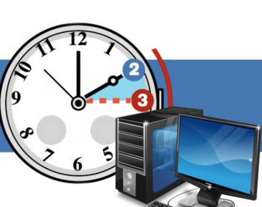
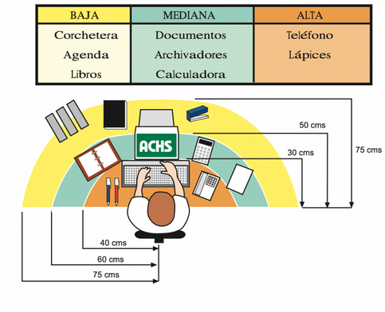
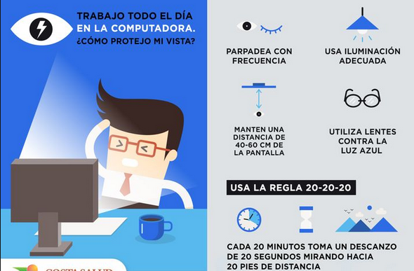

Introducción
Este manual proporciona información sobre el buen uso y mantenimiento del computador para garantizar un rendimiento óptimo y prolongar su vida útil.
Contenido
1. Buen Uso del Computador
Consejos para utilizar eficientemente su computador en el día a día:
- Horarios de Uso:
- Establecer horarios regulares para el uso del computador ayuda a mantener un equilibrio entre la productividad y el descanso.
- Evitar el uso prolongado sin pausas puede prevenir la fatiga visual y el agotamiento. 
- Ergonomía del Espacio de Trabajo:
- Configurar el espacio de trabajo de manera ergonómica favorece la comodidad y reduce el riesgo de lesiones a largo plazo.
- Ajustar la altura de la silla, el monitor y la posición del teclado para mantener una postura natural y cómoda. 
- Cuidado de la Vista:
- Realizar pausas cortas para descansar la vista cada 20 minutos, utilizando la regla "20-20-20" (cada 20 minutos, mirar a 20 pies de distancia durante al menos 20 segundos).
- Ajustar la configuración del monitor para evitar el deslumbramiento y la fatiga ocular. 
- Apague correctamente el computador después de su uso.
- Apagar correctamente el computador es una parte esencial de su mantenimiento y contribuye a un rendimiento óptimo. A continuación, te proporciono los pasos para apagar correctamente un computador con el sistema operativo Windows:
- Cierre todas las aplicaciones y guarde su trabajo:
- Asegúrese de cerrar todos los programas y guardar cualquier trabajo en progreso.
- Haga clic en el botón "Inicio":
- En la esquina inferior izquierda de la pantalla, haga clic en el botón "Inicio" (icono de Windows).
- Seleccione "Apagar" o "Cerrar sesión":
- Dependiendo de la versión de Windows, puede encontrar la opción "Apagar" directamente o puede necesitar hacer clic en la flecha junto a "Apagar" para ver más opciones, incluyendo "Cerrar sesión". Elija la opción que se ajuste a sus necesidades.
- Confirme el apagado:
- Si es necesario, confirme su elección para apagar el computador.
- No sobrecargue el escritorio con demasiados iconos.
- Mantenga su escritorio ordenado y limpio.
- Evite abarrotar el escritorio con demasiados iconos, ya que esto puede hacer que sea difícil encontrar archivos y afectar el rendimiento del sistema.
- Organice los archivos en carpetas y utilice accesos directos de manera selectiva.
- Cierre aplicaciones no utilizadas para liberar recursos.
- Cierre las aplicaciones y programas que no esté utilizando en ese momento.
- Esto liberará recursos del sistema y mejorará el rendimiento general de su computador.
- Utilice el Administrador de tareas (en Windows) para identificar y cerrar procesos no deseados.


2. Mantenimiento Regular
El mantenimiento regular es esencial para garantizar un rendimiento óptimo y prolongar la vida útil de su computador. Aquí hay algunas tareas importantes que debe realizar:
- Limpieza física del computador y periféricos:
- Apague y desconecte su computador antes de limpiarlo
- Evitar el uso prolongado sin pausas puede prevenir la fatiga visual y el agotamiento.
- Limpie el teclado y el mouse con un paño suave y húmedo.
- Evite el uso de limpiadores químicos directamente sobre el equipo.
- Actualización de software y controladores:
- Mantenga el sistema operativo, programas y aplicaciones actualizados.
- Verifique y actualice los controladores de hardware, como tarjetas gráficas y de red.
- Configure las actualizaciones automáticas para simplificar este proceso.
- Respaldo regular de datos importantes:
- Realice copias de seguridad periódicas de sus archivos importantes en un dispositivo externo o en la nube.
- Utilice herramientas de respaldo automáticas para simplificar el proceso.
- Verifique regularmente la integridad de sus copias de seguridad.


3. Seguridad en Línea
La seguridad en línea es crucial para proteger su computador contra amenazas en internet. Aquí hay medidas que puede tomar:
- Instale un programa antivirus confiable:
- Elija un software antivirus reconocido y manténgalo actualizado.
- Realice análisis de virus regularmente para detectar y eliminar posibles amenazas.
- Actualice regularmente contraseñas:
- Cambie sus contraseñas de forma regular.
- Utilice contraseñas fuertes y evite el uso de la misma contraseña para múltiples cuentas.
- Limpie el teclado y el mouse con un paño suave y húmedo.
- Considere el uso de un administrador de contraseñas para gestionarlas de manera segura.
- Sea consciente de correos electrónicos y enlaces sospechosos:
- No abra correos electrónicos de remitentes desconocidos.
- Evite hacer clic en enlaces o descargar archivos de fuentes no confiables.
- Limpie el teclado y el mouse con un paño suave y húmedo.
- Verifique la autenticidad de los correos electrónicos antes de proporcionar información sensible.
4. Correcta Postura
- Altura y Ángulo del Monitor:
- Colocar el monitor a la altura de los ojos para evitar tensiones en el cuello y los hombros.
- Ajustar el ángulo del monitor para reducir el deslumbramiento y la fatiga visual.
- Posición de la Silla y la Espalda:
- Mantener los pies apoyados en el suelo y las rodillas en un ángulo de 90 grados.
- Apoyar la espalda en el respaldo de la silla para mantener una postura ergonómica.
- Posición de las Manos y el Teclado:
- Mantener los codos cerca del cuerpo y en un ángulo de 90 grados.
- Utilizar un teclado ergonómico para reducir la tensión en las manos y las muñecas.